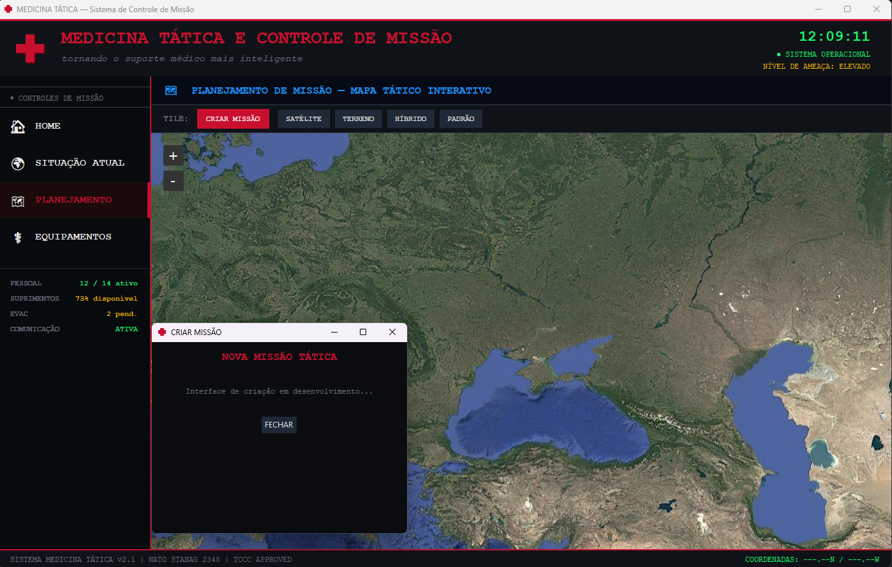
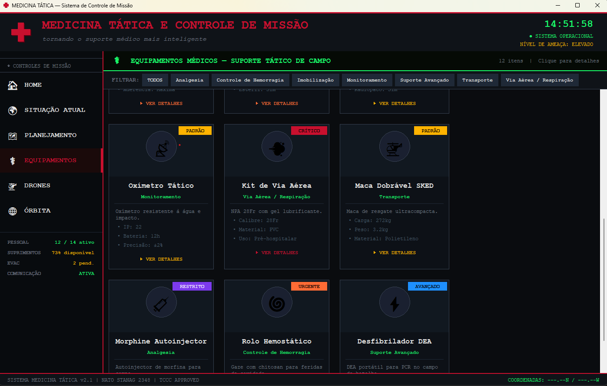

$ whoami
Olá, eu sou Seu Nome
Estudante de programação documentando, semestre a semestre, os exercícios e projetos que vou construindo pelo caminho.
$ cat destaques.txt
Destaques
Materiais e registros selecionados do semestre — visualize diretamente abaixo.

$ renderizando pdf…

$ ls ./projetos
Projetos
Atividades e trabalhos de programação desenvolvidos ao longo do semestre. Clique nos botões de arquivo para abrir PDFs ou código Python diretamente no site.
$ carregando projetos...
$ python bubble_sort.py --visualize
Bubble Sort — ao vivo
Assista o algoritmo de ordenação trabalhar em tempo real. Cada par de barras adjacentes é comparado e trocado até que o array esteja ordenado.
$ pip list && cat requirements.txt
Arsenal Técnico
Ferramentas, linguagens e inteligências artificiais que fizeram parte da construção de cada projeto ao longo do semestre.
Python
Linguagem principal usada em todos os projetos — desde scripts simples até estruturas orientadas a objetos.
Claude AI
IA da Anthropic usada como parceira de raciocínio — para depurar código, explorar conceitos e pensar soluções em conjunto.
ChatGPT
Assistente da OpenAI utilizado para tirar dúvidas conceituais, entender trechos de código e explorar abordagens alternativas.
Git & GitHub
Controle de versão e hospedagem do portfólio. Todo o histórico de alterações e os arquivos dos projetos vivem aqui.
VS Code
Editor de código principal — onde a maior parte dos projetos foi escrita, depurada e organizada.
HTML · CSS · JS
Trio responsável por este portfólio — estrutura, visual e interatividade construídos manualmente, sem frameworks.